Miqat মীকাত
A step-by-step companion for Umrah and Hajj: what to do now, and what to recite now. With the Qur'an, Hisn al-Muslim and your own reading lists of duas and ayahs. Bangla first, English second. Works without the internet.
উমরাহ ও হজের ধাপে ধাপে গাইড: এখন কী করবেন, কী পড়বেন। সাথে কুরআন, অডিওসহ দোয়া, দোয়া ও আয়াত মিলিয়ে নিজের তালিকা, নামাজের সময়, কিবলা ও হিজরি ক্যালেন্ডার।
I was looking for an app that would guide me through Umrah and Hajj step by step, like a companion walking beside me. I didn't find one that did it the way I wanted, so I built Miqat.
The app is built around two questions a pilgrim keeps asking:
- What do I do now?One card per step, in order, with a progress bar. Tap Done and the next step comes up.
- What do I say now?The words for that moment, in Arabic, with transliteration, meaning, source and audio.
It also has to work where pilgrims actually are. The mobile network in Mina and Arafah is unreliable, so everything runs on the phone: the guides, the dua library, the Qur'an, prayer times and the Qibla.
And it should stay useful after the pilgrimage. Version 0.2.0 adds the whole Qur'an and reading lists: duas and any part of the Qur'an in one list, in your order, each repeated as many times as you read it, played from start to end.
Mīqāt is the boundary where a pilgrim enters ihram and makes the intention. Umrah and Hajj begin when you cross it. For most pilgrims flying from Bangladesh, that moment comes on the plane, before landing in Jeddah. That's the first card in the app, and the point where a guide in your pocket starts to matter.
The word comes from waqt, time: a mīqāt is an appointed time or place. The Qur'an uses its plural for the new moons:
"They are times appointed (mawāqīt) for people and for Hajj."Qur'an 2:189
So the name also fits the rest of the app: prayer times, the Hijri date and the expected days of Hajj.
One card per step, from ihram to the farewell Tawaf
- Umrah in 8 steps and Hajj in 13, one card per step. Swipe between cards or tap the numbered bubbles.
- Hajj types: Tamattu‘ (the default), Qiran and Ifrad. The type changes the 8th-day ihram, whether a sacrifice is required, and whether Sa‘i follows Tawaf al-Ifadah.
- Hajj dates come from the Umm al-Qura calendar and are marked as expected, since the final dates depend on the moon sighting.
- Practice mode: rehearse at home with separate progress, so the real pilgrimage starts fresh.
- Ihram restrictions: what's forbidden for everyone, for men, for women and inside the Haram, and what to do if one happens.
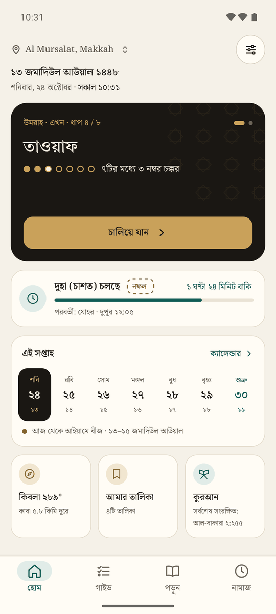
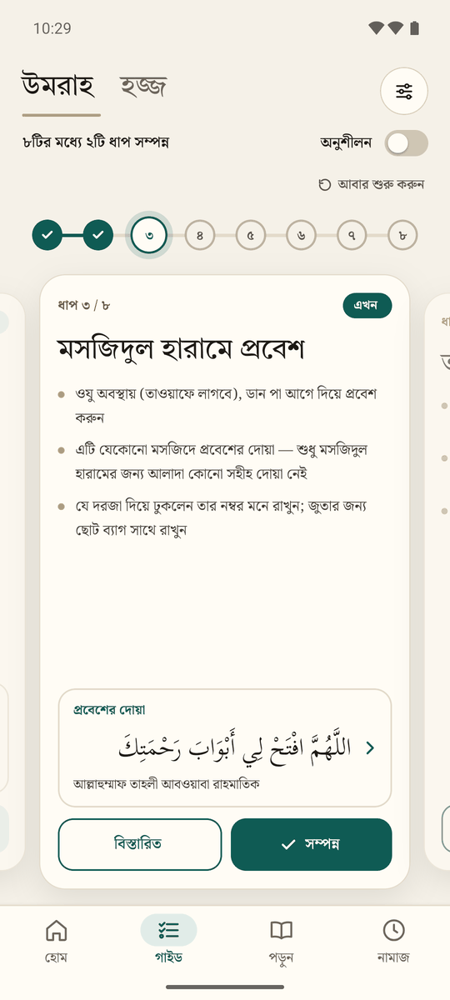
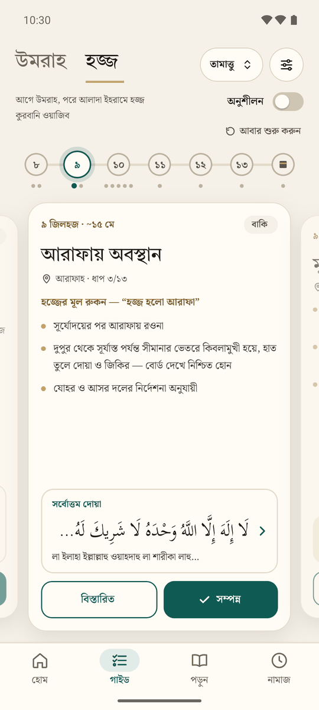
Each step in full, and counters that show what to say where
- Details on each card open the step's full page from the two booklets: what to do, what's sunnah and what to recite, with the hadith behind it.
- Count your rounds with a large button, and undo a mistaken tap.
- A diagram shows the Black Stone, the Yemeni Corner and the Hatim, or Safa, Marwah and the green lights.
- Only words with an authentic source: "Allāhu akbar" at the Black Stone Bukhari 1613, Rabbanā ātinā… between the Yemeni Corner and the Black Stone 2:201, and the dhikr on Safa and Marwah Muslim 1218.
- It says plainly that there is no fixed dua for each round.
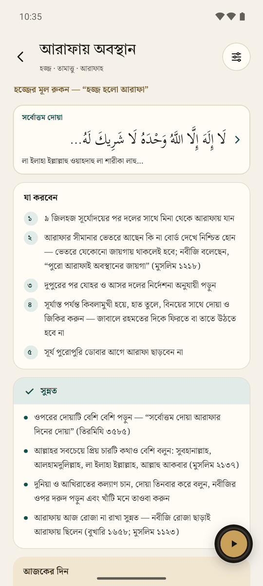
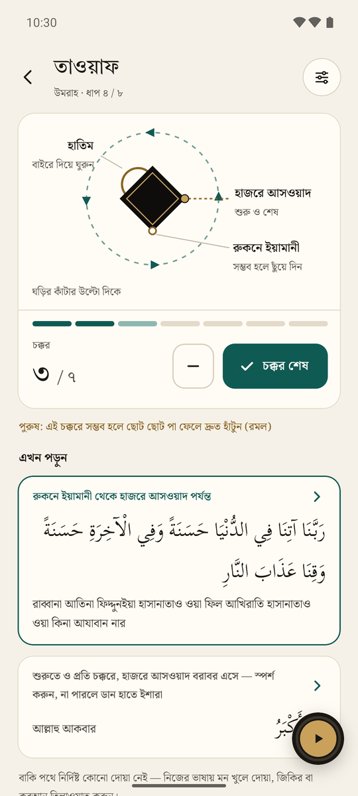
Your daily reading: duas and ayahs in one list
- Mix duas and the Qur'an: a dua from the library, one ayah, a range of ayahs or a whole surah, in your order.
- Repeat each item as many times as you read it, from 1 to 1000. Play the list once or on a loop.
- Plays in order, with the screen following along: the list scrolls to the item, the reader marks the ayah and a dua's page marks the line. It keeps playing with the screen locked.
- Kept on the phone: the audio of everything in your lists is downloaded, so a list plays without the internet.
- Saved holds what you bookmark. Name as many other lists as you like, and drag to reorder.
- Share a list as a link. Whoever opens it gets the same list, with its name, and adds it with one tap.
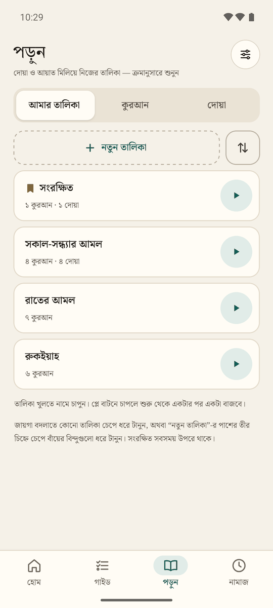
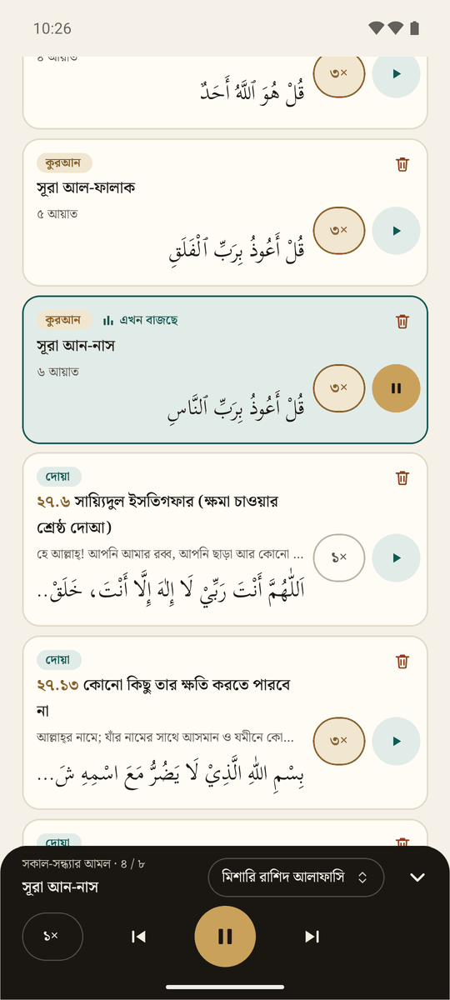
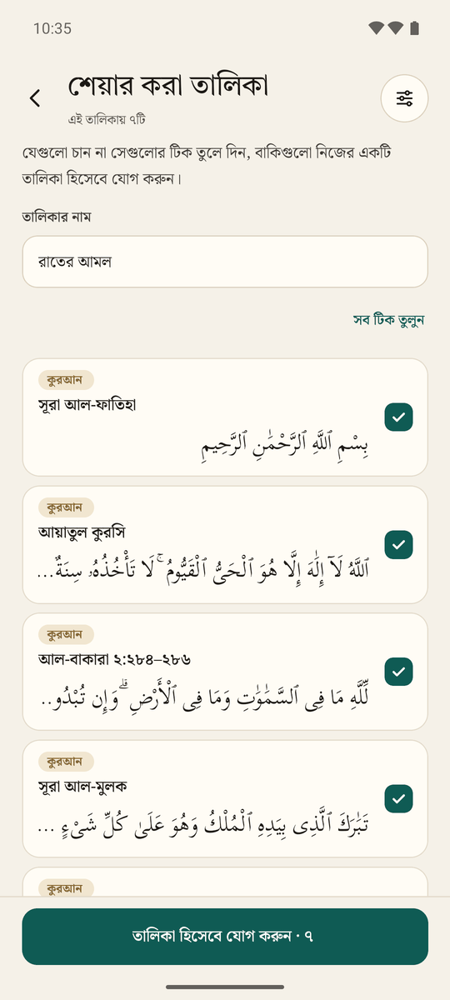
The whole Qur'an, with translation, tafsir and recitation
- All 114 surahs in the Uthmani script, or in the IndoPak script with the Hafezi or Kolkata font.
- Translation in Bangla (Abu Bakr Zakaria) or English (Saheeh International), with the translators' notes.
- Tafsir: al-Mukhtasar in Bangla and English is on the phone. Ahsanul Bayaan and Ibn Kathir load from Quran.com and stay once read.
- Recitation ayah by ayah from 14 qaris, among them the imams of the Haram, Alafasy, Abdul Basit, Husary and Minshawi. Download a surah to hear it offline.
- Search by surah name, number or ayah (2:255). Share a surah or an ayah as a link.
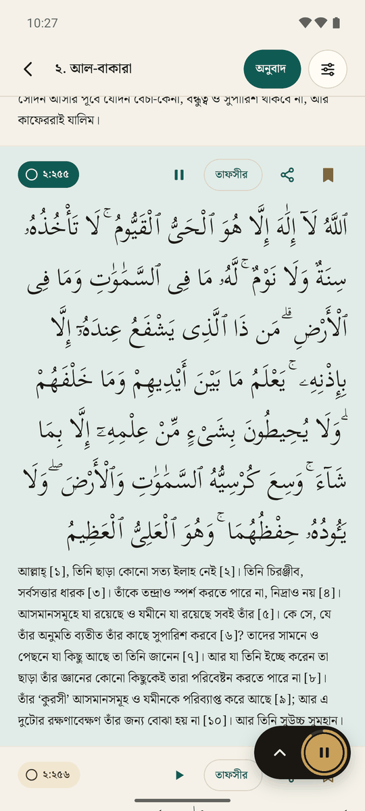
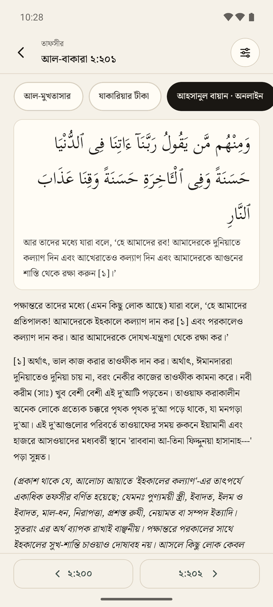
The whole of Hisn al-Muslim, with audio
- 421 duas, each split into lines, with Arabic, transliteration and meaning in Bangla or English, plus the hadith or ayah it comes from.
- Audio for 313 duas. Each line highlights while it plays. The guide's duas download on first launch and stay on the phone.
- Memorize mode blurs the text while the audio is paused. Tap a line to reveal it and play from there.
- Search by words or by Hisn al-Muslim number.
- Bookmark a dua to keep it in Saved, add it to any list, or share it as a link.
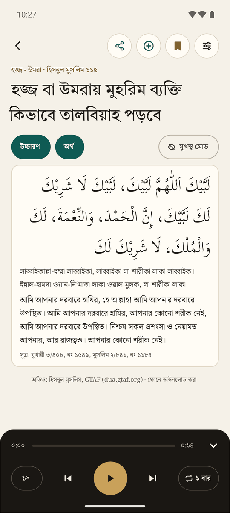
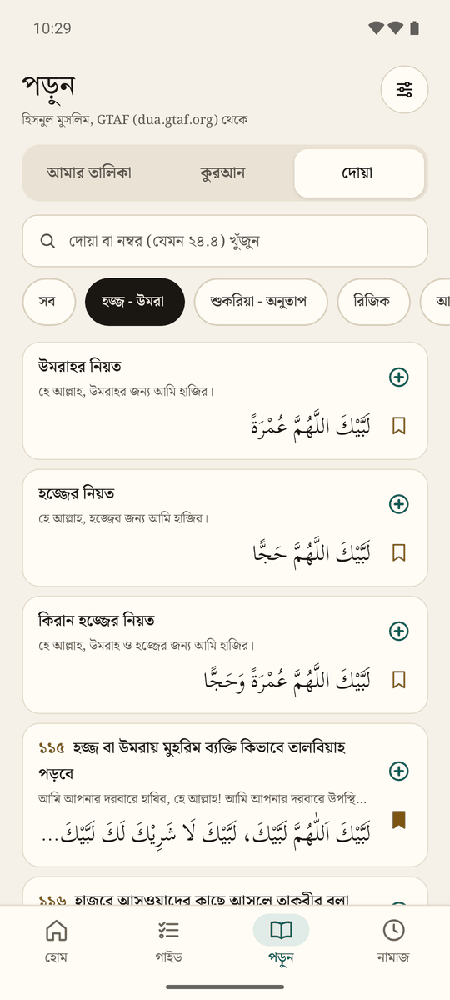
Calculated on the phone, wherever you are
- Prayer times use Umm al-Qura in Saudi Arabia, and Karachi with Hanafi Asr in Bangladesh. You can change the method and switch Asr between Standard and Hanafi.
- The day is shown as segments. Forbidden times (sunrise, zawal, sunset) appear as red rows, and Duha is always marked nafl.
- Reminders come at each prayer time and work offline. On Fridays, Dhuhr is called Jumu‘ah.
- Qibla compass with the bearing and the distance to the Kaaba, and a tip to calibrate when the compass is unsure. Within 500 km of Makkah it asks for GPS, because a city's centre point gives the wrong direction that close to the Kaaba.
- Calendar: Hijri and Gregorian months side by side, with Ramadan, the Eids, the days of Hajj, Ashura and the white days marked. Days the schools differ on are left out.
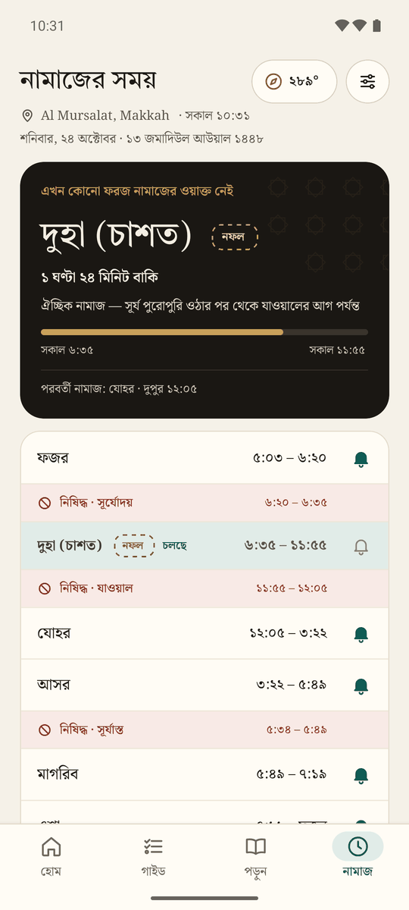
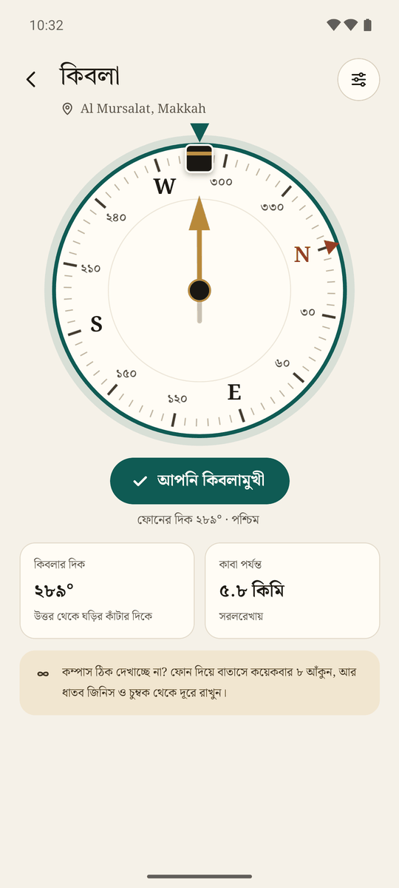
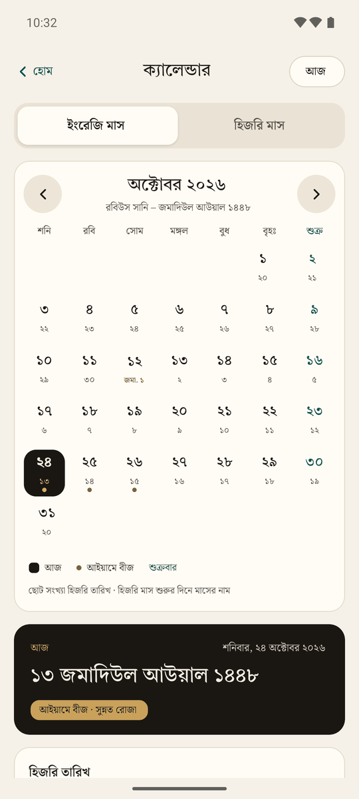
Comfortable in Bangla, English and Arabic
- Four Arabic fonts: Scheherazade New, Noto Naskh Arabic, and the two most Bangladeshis learned to read in, Hafezi (IndoPak) and Kolkata print. With these two, the Qur'an switches to the IndoPak script, with its stop signs and ayah markers.
- The Kolkata font is our own build of a 2011 font, with fixed letters and spacing and the Qur'anic signs it lacked.
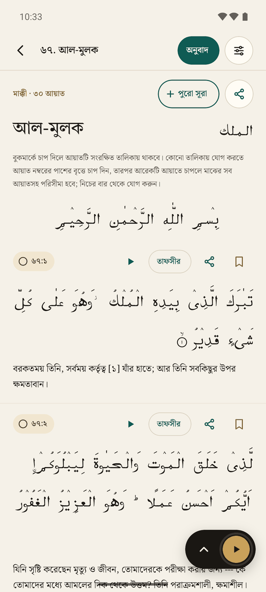
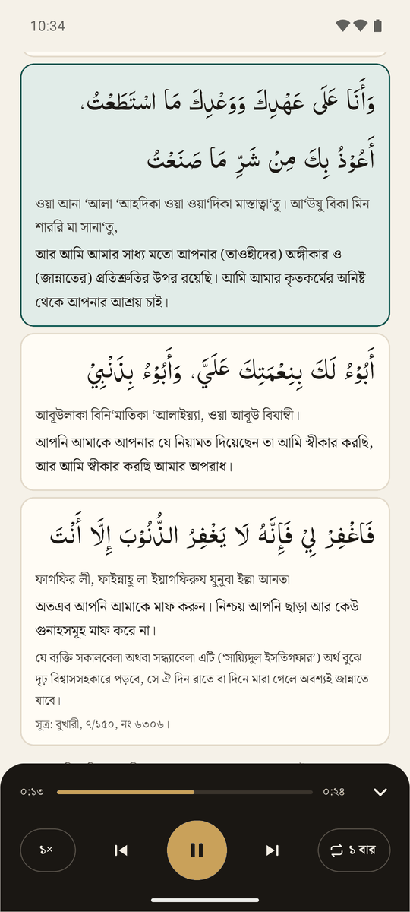
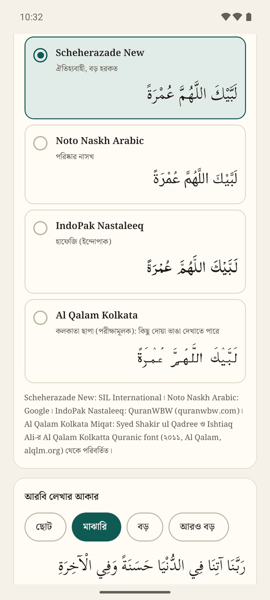
Steps of Umrah and Hajj
- How to do ‘Umrah
- Ibn Baz, at-Tahqiq wal-Idah: Hajj, Umrah and visiting Madinah
Where the schools of law differ, the app doesn't take a side. It says "follow your group's guidance".
Duas
As published by Greentech Apps Foundation (GTAF) at dua.gtaf.org: the Arabic, the Bangla and English transliterations and meanings, the references and the audio recordings.
Gaps in one language were filled with our own translation, and a few errors were corrected. The ihram intentions come from Sahih Muslim 1251 and the two booklets.
The Qur'an
Tafsir and recitation
Prayer times and Qibla
adhan-js by Batoul Apps calculates the prayer times and the Qibla bearing on the phone.
Hijri date
@tabby_ai/hijri-converter, a TypeScript port of Mohammed Alshehri's hijri-converter, gives the Umm al-Qura date.
When online, the Aladhan API checks the date Saudi Arabia announced.
Fonts
- Tiro Bangla for headings
- Noto Serif Bengali for Bangla and English text
- Scheherazade New by SIL International, and Noto Naskh Arabic, for Arabic
Hafezi and Kolkata print
IndoPak Nastaleeq by QuranWBW, the font Quran.com uses.
Al Qalam Kolkata Miqat, our build of the 2011 Al Qalam Kolkatta Quranic font by Syed Shakir ul Qadree and Ishtiaq Ali (Al Qalam), with fixed letters and spacing, and the Qur'anic stop signs it lacked. Still experimental.
Built with
Before you rely on it
- The religious content hasn't been reviewed by a scholar yet. That review is planned before a public release. Until then, treat the app as a study aid, and follow your group's scholar during the pilgrimage.
- Prayer times are calculated, not taken from the mosque's timetable. The forbidden-time lengths are approximate.
- Hajj dates are predictions. They become final when the moon is sighted.
Privacy
There is no backend and no account. Your location, progress and lists stay on your phone. The app connects to the internet only to:
- download dua audio from GTAF
- play or download Qur'an recitation from EveryAyah
- load the online tafsirs from Quran.com
- check the Saudi Hijri date with Aladhan
- name a GPS location, using the phone's own geocoder
The app isn't on the Play Store yet. Download the APK from Google Drive and install it yourself.
অ্যাপটি এখনো Play Store-এ নেই। গুগল ড্রাইভ থেকে APK ফাইল ডাউনলোড করে নিজে ইনস্টল করুন।
-
ড্রাইভ ফোল্ডার থেকে সবচেয়ে নতুন miqat-….apk ফাইলটি ডাউনলোড করুন।Download the newest miqat-….apk from the Drive folder.
-
ডাউনলোড হওয়া ফাইলটি খুলুন। ফোন অনুমতি চাইলে এই উৎস (Chrome বা Files) থেকে অ্যাপ ইনস্টল করার অনুমতি দিন।Open the downloaded file. If your phone asks, allow installing apps from this source (Chrome or Files).
-
অ্যাপটি Play Store থেকে নয় বলে Android সতর্ক করতে পারে। তবুও ইনস্টল করা বেছে নিন।Android may warn you because the app isn’t from the Play Store. Choose to install anyway.
-
নতুন সংস্করণ এলে একইভাবে ইনস্টল করুন। আপনার তালিকা ও অগ্রগতি থেকে যাবে।To update, install a newer file the same way. Your lists and progress stay.